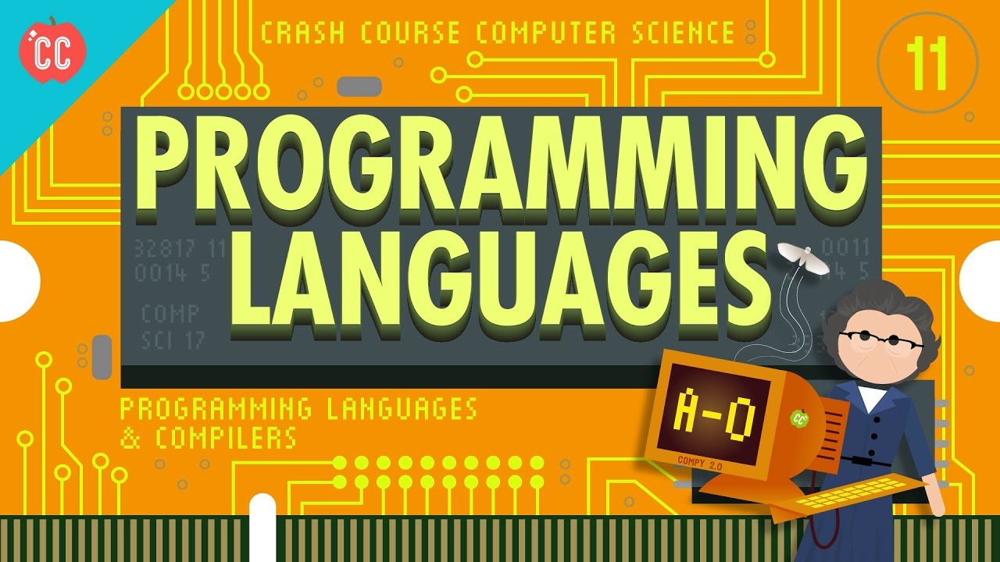

A programming language is a vocabulary and set of grammatical rules for instructing a computer or computing device to perform specific tasks. The term programming language usually refers to high-level languages.
The programming process uses special languages called programming languages, which contain vocabulary to guide the system for carrying out specific tasks, in addition to specific rules. A number of special words are in every programming language, the most important of them (JAVA, Java script, C#, SQL, PHP, C++)
